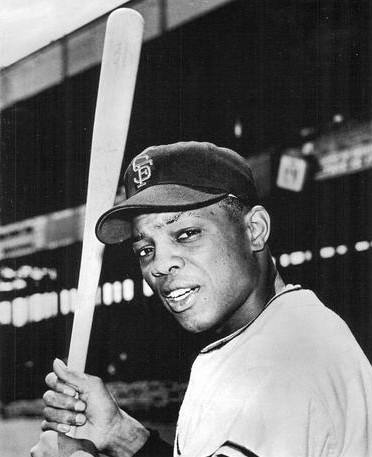

Barry Bonds: The Loudest Bat San Francisco Ever Saw
Seven MVPs, 762 home runs, and a stretch from 2001 to 2004 where the most feared hitter in baseball history wore orange and black. Say what you want about him. You never took your eyes off the guy.

Let me be honest about where I stand before we start. I know the whole story. I know why he splits a room, why Cooperstown kept the door shut, why some fans in this city love him without an asterisk and others cannot say his name without one. We are going to get to all of it. But if you sat in the seats at what was then Pac Bell Park in the early 2000s and watched Barry Bonds walk to the plate, you already know the one thing that is not up for debate. There has never been a more terrifying at-bat in the history of the sport, and it happened here, in San Francisco, for a decade and a half.
A Giant by birthright
Bonds came home in 1993. He grew up around this franchise, his father Bobby was a Giant, his godfather was Willie Mays, and when he signed as a free agent after his years in Pittsburgh, it felt like the family finally getting its most famous son back. He was already a two-time MVP and one of the best all-around players alive. What nobody could have predicted was that the best was still coming, and that it would arrive in his late thirties, an age when most hitters are fading into a bench role.

2001: the year the number broke
In 2001 he hit 73 home runs. Read that again. The single-season record had stood at 61 for decades, then Mark McGwire pushed it to 70, and everyone assumed that was the ceiling for a generation. Bonds blew past it in a season that felt less like baseball and more like a video game with the difficulty turned off. Pitchers stopped trying to get him out and simply stopped throwing him strikes, and it still did not matter. The ball left the yard, and half of them landed in McCovey Cove.
That was the beginning of the most absurd four-year peak the sport has ever seen. From 2001 through 2004 he won four straight MVP awards, giving him seven for his career, more than any player in baseball history. In 2004 he walked 232 times, another record that may never be touched, because it means opposing managers decided that handing him first base was smarter than letting him swing. That is not a statistic. That is a white flag, printed in the box score, night after night.
The chase, and August 7, 2007
The last great act was the record that matters most. On August 7, 2007, Bonds hit his 756th career home run to pass Hank Aaron and become the all-time home run king. He would finish with 762, a number that still sits at the top of the list. Whatever you believe about how he got there, the moment happened in this ballpark, in front of this city, and the roar that night was real. San Francisco had watched the whole climb, and San Francisco cheered.
The argument that never ends
Here is the part I am not going to dodge. Bonds is tied forever to the steroid era, and the Hall of Fame voters made their statement by leaving him out across all ten of his years on the ballot. That is the shadow, and it is not going away. But the man was a first-ballot talent before any of the controversy, an eight-time Gold Glove outfielder and a base-stealing threat who was already an all-time great in his twenties. The debate about his legacy is real and worth having. The debate about whether he was the most dangerous hitter anyone in this city ever watched is not. He was. It is not close.
He never won a World Series here, and the 2002 team came agonizingly close before falling to the Angels in seven games. That missing ring is the one hole in the story. But when people ask what it was like to watch Barry Bonds hit in his prime, the honest answer is that it was the most electric single-player experience this franchise has ever offered. You did not get up for a hot dog when his spot in the order came around. Nobody did.
Career Milestones- 1993Signs with the Giants as a two-time MVP
- 2001Hits a record 73 home runs in a single season
- 2004Walks a record 232 times, wins a fourth straight MVP
- 2007Passes Hank Aaron, finishes with 762 career home runs
“You did not get up for a hot dog when his spot in the order came around. Nobody did.”
Bay Area Sports Blog- 762 career home runs, the most in Major League history
- 73 home runs in 2001, the single-season record
- Seven MVP awards, more than any player ever
- 232 walks in 2004, a record that still stands
More: Giants section · Jeff Kent, the other MVP in that lineup · Bay Area sports history